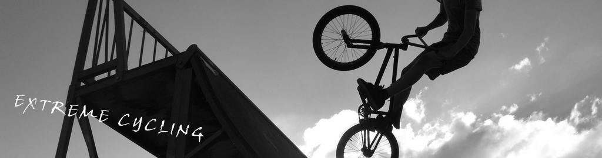

|  |
极限单车是由美国私人教练兼极限运动员JOHNNYG于二十世纪八十年代首创，是一种结合了音乐、视觉效果等独特的充满活力的一种极限运动。其承接了公路赛车刺激的运动方式与全部姿势，摒除了赛车的不安全因素，破除了天气的制约，使整个赛程更为灵活、主动，参与者可由自身情况和课堂需要调整坡度、阻力、速度等，从而改变运动量，搭配超炫音乐和闪光灯，在教练的带领下驰进大汗淋漓的“脂肪杀手”之旅。 极限单车在克服了室外行驶的一切缺点后，由于技术上的改进，使得这项运动在简单易学之余，成为一项能够使全身得到锻炼的有氧运动。15到50岁的人都适合。但是由于绚丽灯光和分贝较高的音乐，选择动感单车的人士集中在20到35岁之间，大多为年轻白领。 极限单车运动后会消耗很多的能量，出很多的汗。同时还增强你的腿部的力量，美化下肢形体。极限单车是在健身房里大受欢迎的有氧运动项目。运动者配合音乐、灯光，模仿各种运动方式，如爬山、快速骑车等，趣味性极强。因此极限单车运动要求有较强的腿部力量方可练习。 极限单车最大的特点，是让你觉得能将身体储备已久的能量马上释放出来，产生一种成就感。运动的前必须经过五分钟的热身运动，然后根据个人力度来调节车的阻力和转数，并模拟上下坡、原地走的动作，在锻炼耐力的同时大量消耗脂肪；最后5分钟的放松运动，令线条更修长优美。四十分钟的极限单车运动坚持下来可以消耗400～500个卡路里，相当于长跑一个半小时，不仅可减脂，还可提高心肺功能。 |
| 《上一个 | 回首页》 |